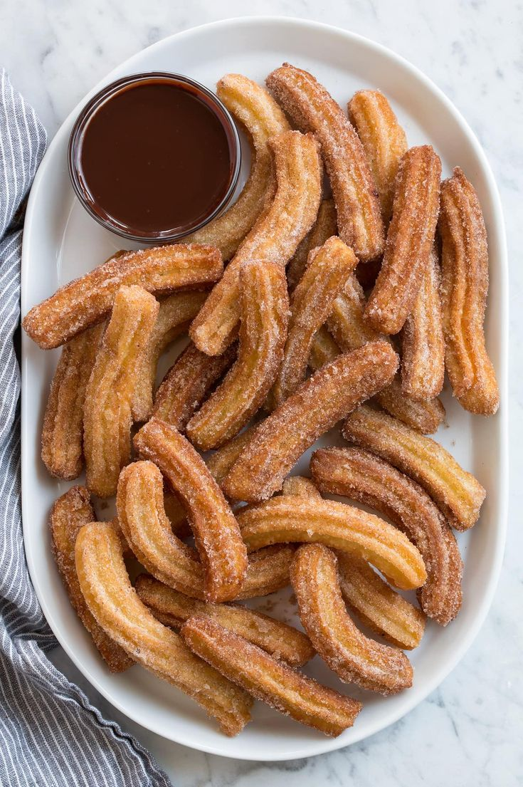

Churros

Servings: 4
Time Taken: 20 minutes
Ingredients:
- 1 cup water
- 2 tbsp butter
- 2 tbsp sugar
- 1 cup flour
- 1 egg
Method:
- In a pan add Water, Butter, Sugar and a pinch of salt and mix until melted.
- Add flour and mix until it forms a ball.
- let cool for 3 - 5 minutes.
- Add egg and mix.
- use a pipign bag with a star - shaped wand for crisp edges.
- fill piping bag with dough.
- on a piece of parchment paper pipe the desired lenght.
- deep fry over high heat until golden brown.
- while still hot roll in a 1:1 ratio of sugar and cinnamon powder.
- for the dipping sauce melt chocolate chips or nutella in the microwave.